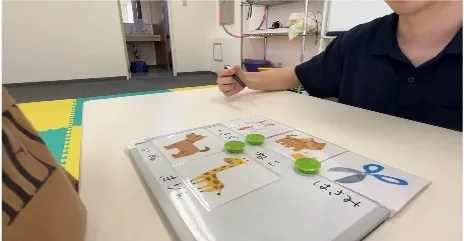

Contact
お問い合わせ
ご利用・見学、施設や事業所、採用、証明書発行など、内容に合わせてお問い合わせいただけます。どこに相談すればよいか迷う場合も、まずはこちらからご連絡ください。

Purpose
お問い合わせ内容を選ぶ
該当する内容を選ぶと、下のフォームに種別が入ります。施設が決まっている場合は「対象施設」も選択してください。
Form
お問い合わせフォーム
静的HTMLのため、このフォームは見た目の確認用です。送信処理、確認画面、問い合わせ種別ごとの送信先振り分けは本番実装時に設定してください。
お急ぎの場合
本部 TEL. 03-6721-0714
にこっと原宿 TEL. 03-6803-8652
お問い合わせ先の目安
- 施設へのお問い合わせは、対象施設を選んでフォームからご連絡ください。児童発達支援は未就園児〜未就学児、放課後等デイサービスは小学1年生〜小学6年生が主な対象です。
- 法人情報、関係機関からの照会、公表資料に関する確認は本部・法人窓口へご連絡ください。
- 証明書発行は、証明書発行ページの案内もあわせてご確認ください。
- 採用については、採用情報ページと外部求人ページの募集状況をご確認ください。